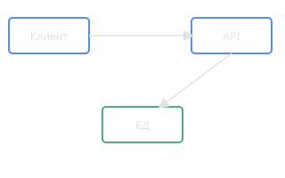

Редактор в стиле VS Code
Подсветка синтаксиса собственного DSL, автодополнение, проверка ошибок в реальном времени.
Пишешь текстовое описание на собственном DSL — получаешь визуальную диаграмму: UML, BPMN, ERD, сети Петри, IDEF0/IDEF3, DFD. С версионированием, ИИ-генерацией и сохранением в GitHub, Google Drive или локально.

Подсветка синтаксиса собственного DSL, автодополнение, проверка ошибок в реальном времени.
Визуальный холст с масштабированием, экспортом в SVG/PNG и в форматы самих нотаций.
Описание задачи текстом или изображение макета — на выходе готовый DSL-код диаграммы.
Git-подобное версионирование: коммиты, дифф между версиями, откат к прошлым состояниям.
Ничего не найдено.
Нет, DiagramCode работает прямо в браузере.
На выбор: GitHub, Google Drive или локально на устройство.
Да, через ИИ-помощника — текстом или по загруженному изображению макета.
Учебный и портфолио-проект: веб-сервис для описания и визуализации диаграмм на собственном предметно-ориентированном языке (DSL), с поддержкой нескольких нотаций, историей версий и интеграциями с внешними хранилищами.